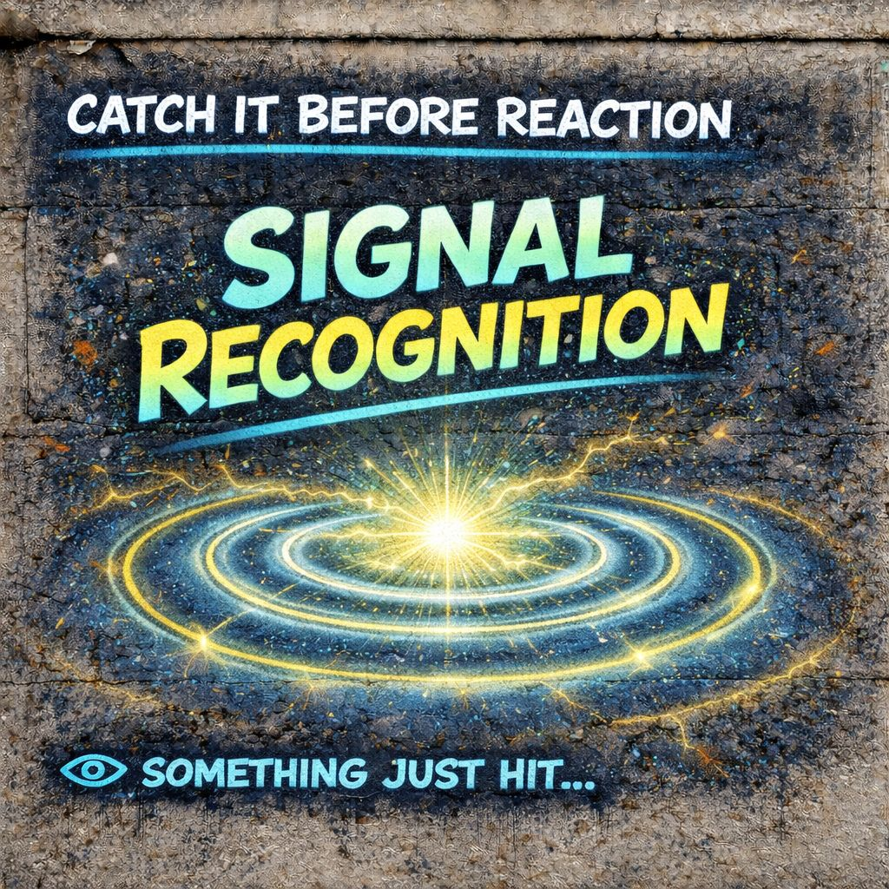

📡 Signal Recognition
there’s a signal.”
⚡ It speeds up
🧩 It becomes something
🎭 You become it
👁️ Catch it at the hit…
and everything after changes.
📍 Foundation
Before velocity.
Before meaning.
Before identity.
There is a moment so small it usually gets skipped:
No label yet.
No judgment yet.
⚙️ Core Definition (IPT)
Not:
- what it means
- how you feel
- what you think
🧠 Why This Is The Most Powerful Point
Every other stage comes after this:
If You Miss It
- velocity takes over
- meaning locks
- identity reacts
If You Catch It
- you get the earliest leverage
- speed becomes visible
- interpretation can slow
👁️ What A Raw Signal Feels Like
It is subtle.
You might notice:
- a shift in attention
- a flicker of emotion starting
- a word or image landing
- a tone that hits before you know why
- a slight body reaction
Just:
📡 “something just hit”
⚡ What Happens Next If Unseen
Immediately after signal:
- ⚡ velocity begins
- emotional charge rises
- pattern matching starts
- interpretation accelerates
And within milliseconds:
You skip the signal entirely.
🔍 Why Signals Are Hard To See
Because the brain is optimized to jump straight to meaning.
Signal recognition is usually:
- unconscious
- pre-verbal
- extremely fast
🎯 Example
You read a comment.
What You Notice
“That’s offensive.”
What Actually Happened
📡 words entered
⚡ tone triggered
🧩 meaning formed
🎭 identity reacted
📡 IPT Training Target
IPT tries to move awareness earlier.
From
“This is offensive”
To
“Something just hit me”
🌐 Signal vs Story
This is one of the cleanest distinctions:
📡 Signal
raw input
🧩 Story
interpreted meaning
Most people live inside the story.
⚠️ Failure To Recognize Signals
When signals are unseen:
- you inherit emotional charge
- you accept meanings as given
- you react as if interpretation is reality
- you become downstream of the system
👁️ Signal Recognition + Observation
Observation works best when it starts early.
Late
- identity → too late
- meaning → late
Earlier
- velocity → better
- signal → optimal
⚡ Micro-Timing
There is a tiny window:
→
⚡ acceleration
Signal recognition lives in that gap.
But trainable.
🧠 Micro-Skills
You can practice noticing:
- “What just entered my awareness?”
- “What hit before I reacted?”
- “What did I feel before I labeled it?”
- “Where did that come from?”
These questions pull you back to signal level.
📱 Modern Environment
Today’s systems are built to:
- flood signals
- package them with velocity
- bypass awareness
- trigger immediate meaning
🔓 What It Gives You
Recognizing signals early gives:
- choice before reaction
- distance from emotional spikes
- flexibility in meaning
- resistance to manipulation
- clarity about influence
🔥 IPT Edge
Mead Explains
how meaning forms through interaction
IPT Adds
you can detect the interaction before meaning forms
👁️ Final Distillation
before your mind tells you what it is.
there’s a signal.
⚡ It speeds up
🧩 It becomes something
🎭 You become it
👁️ Catch it at the hit…
and everything after changes.